Ragil Prasetya
Koordinator Kelompok"Aku belajar memimpin dan mengatur pembagian tugas teman-teman."
Membangun kemandirian kerja dan kesejahteraan psikososial remaja Panti Asuhan Dharmo Yuwono Purwokerto — satu langkah kecil menuju masa depan yang mereka rancang sendiri.
Model Career Readiness berbasis Psikologi Kewirausahaan memadukan penguatan mental, pengenalan potensi diri, dan keterampilan wirausaha praktis. Remaja tidak hanya dibekali keterampilan membuat produk, tetapi juga kesiapan psikologis untuk menghadapi dunia kerja dan berwirausaha secara mandiri.
Membangun rasa percaya diri, ketahanan psikologis, dan pola pikir bertumbuh.
Pelatihan produksi, pengemasan, dan pengelolaan usaha kecil sehari-hari.
Pendampingan pemasaran produk agar hasil karya bernilai ekonomi nyata.
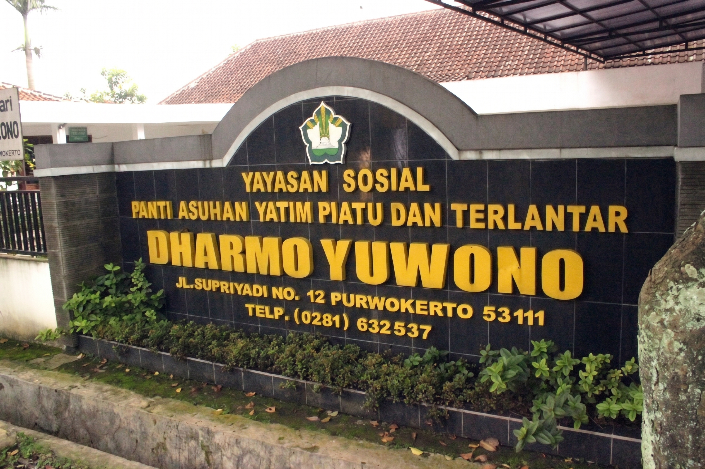
Panti Asuhan Dharmo Yuwono telah lama menjadi rumah bagi anak-anak dan remaja yang membutuhkan pengasuhan, pendidikan, dan bekal hidup mandiri. Melalui program ini, panti berkolaborasi dengan tim pengabdian untuk membekali para remaja binaannya dengan keterampilan wirausaha dan kesiapan psikologis menghadapi dunia kerja.
30+
Anak Asuh
15
Remaja di Program
5
Jenis Produk Karya
Setiap remaja membawa bakat dan mimpinya masing-masing. Berikut sebagian kecil dari perjalanan mereka.
"Aku belajar memimpin dan mengatur pembagian tugas teman-teman."
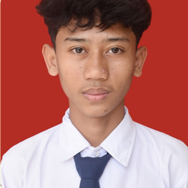
"Ingin punya usaha kecil sendiri suatu hari nanti, sekarang aku sudah mulai belajar mengemas produk."
"Aku suka motret produk-produk kita biar keliatan menarik saat dijual."
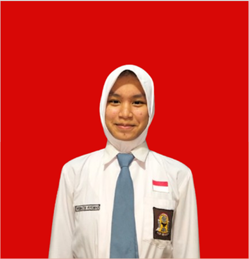
"Aku jadi tahu langkah demi langkah untuk siap kerja, nggak cuma bisa bikin produk."
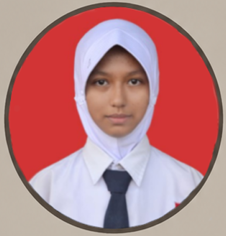
"Program ini bikin aku lebih percaya diri ngobrol sama pembeli dan menawarkan produk."
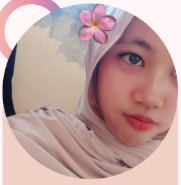
"Sekarang aku bisa hitung untung rugi jualan sendiri, nggak asal jual saja."
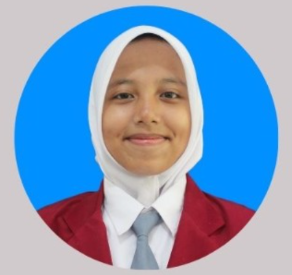
"Keychain rajutan pertamaku laku, dari situ aku makin semangat belajar."
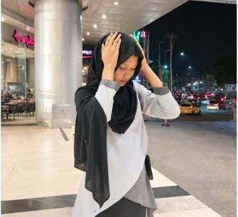
"Belajar desain bikin aku pede kalau nanti mau kerja di bidang kreatif."
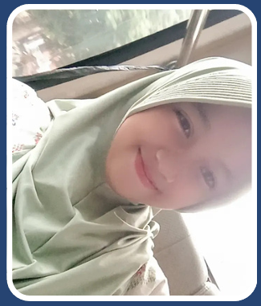
"Menyusun hampers itu melatih kesabaran dan ketelitianku."
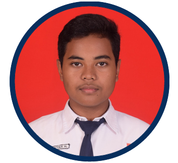
"Aku pegang akun media sosial produk kita, seru bisa lihat respon pembeli."
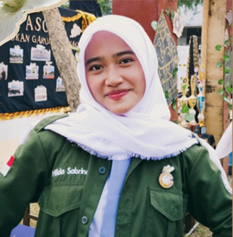
"Aku belajar cara membalas chat pembeli dengan sopan dan cepat."
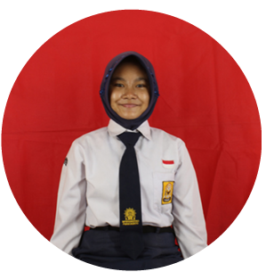
"Aku belajar kalau bikin totebag itu bisa jadi bekal usaha, bukan cuma hobi."
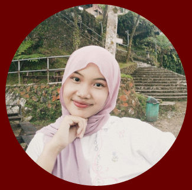
"Merangkai buket snack ngajarin aku kreatif pakai bahan seadanya."
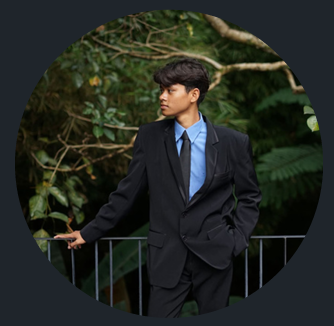
"Aku jadi paham proses dari bahan mentah sampai produk siap jual."
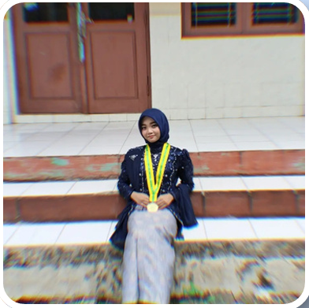
"Aku jadi tahu bagaimana cara merespon pembeli dengan baik"
Momen-momen dari rangkaian pelatihan, produksi, hingga pemasaran bersama remaja Panti Asuhan Dharmo Yuwono.
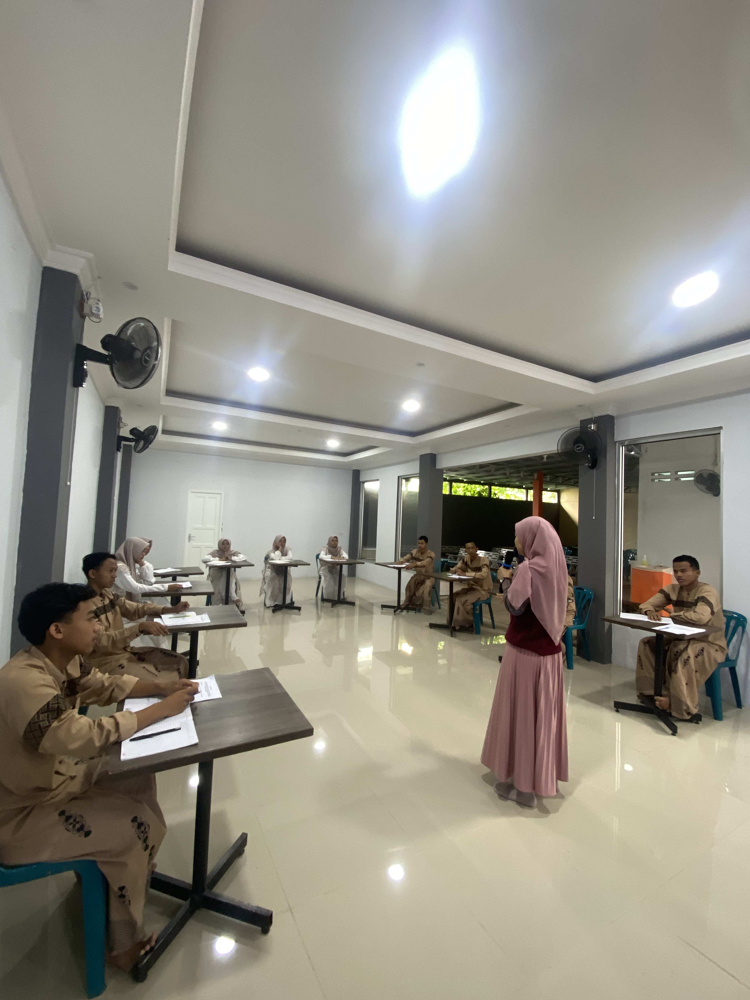
Sesi Pelatihan Mengenal Potensi Diri
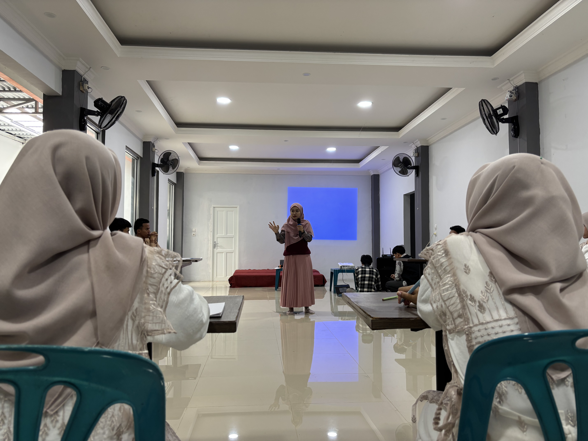
Sesi Pelatihan Career Passport

Sesi Pelatihan Mental
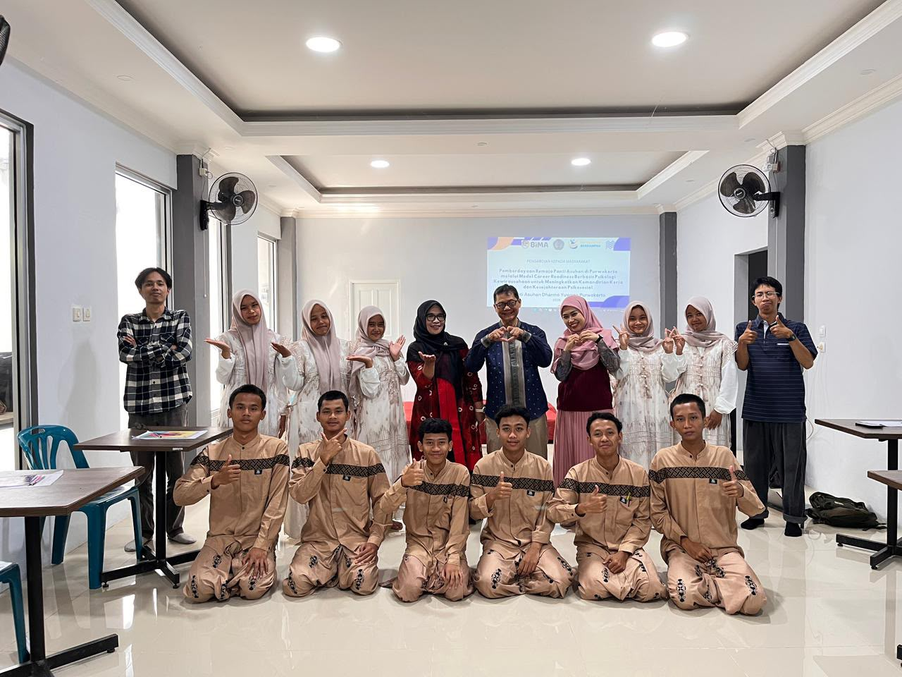
Dokumentasi Bersama
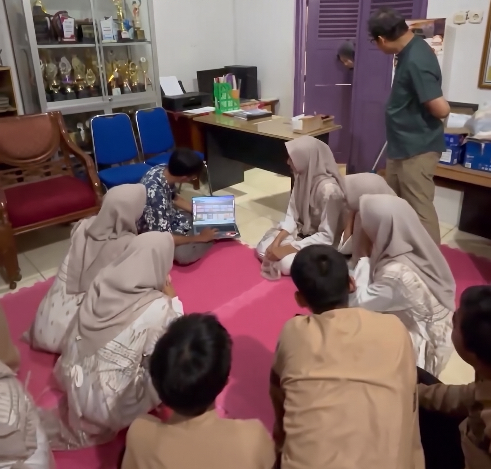
Pendampingan Kelompok
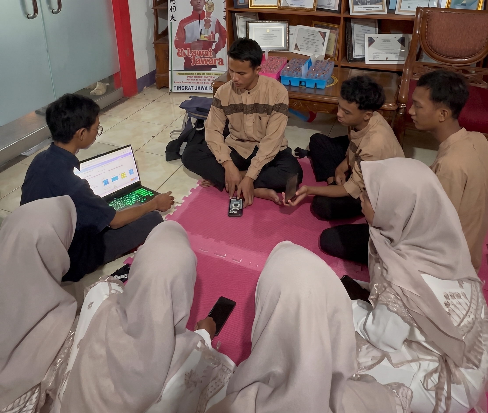
Pendampingan Kelompok
Setiap pembelian adalah dukungan langsung untuk masa depan para remaja Panti Asuhan Dharmo Yuwono.
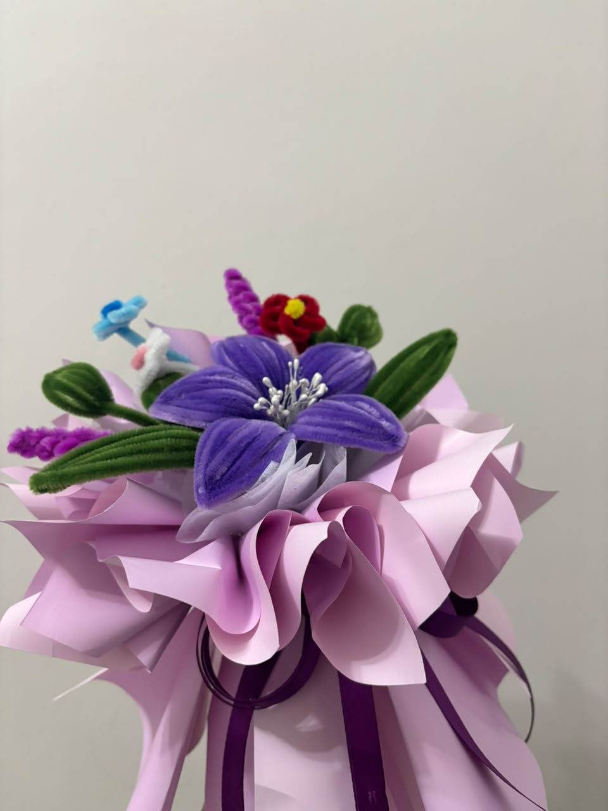
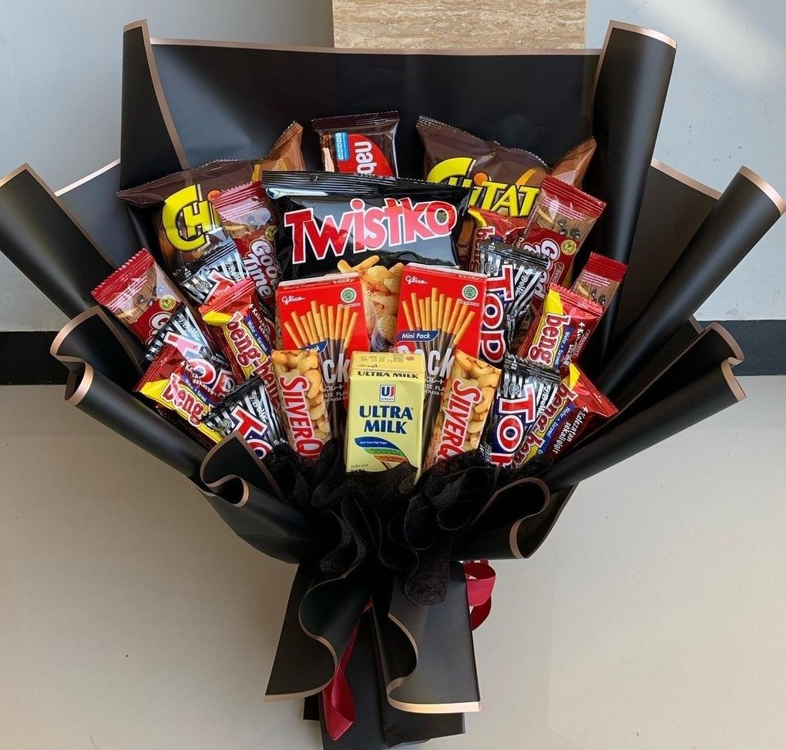
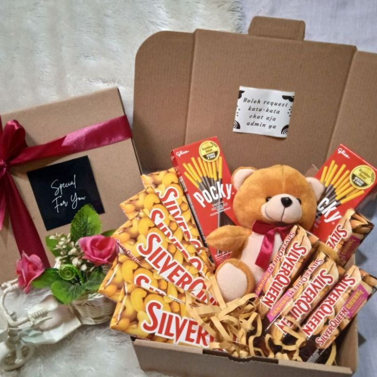
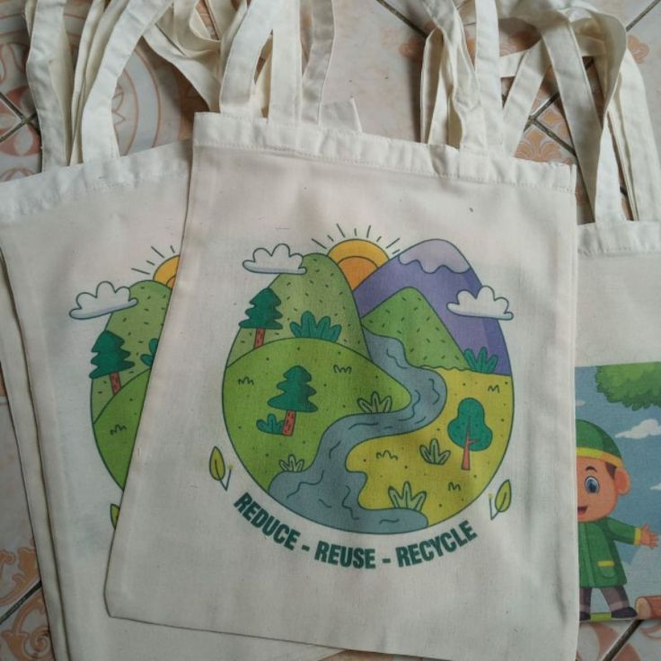
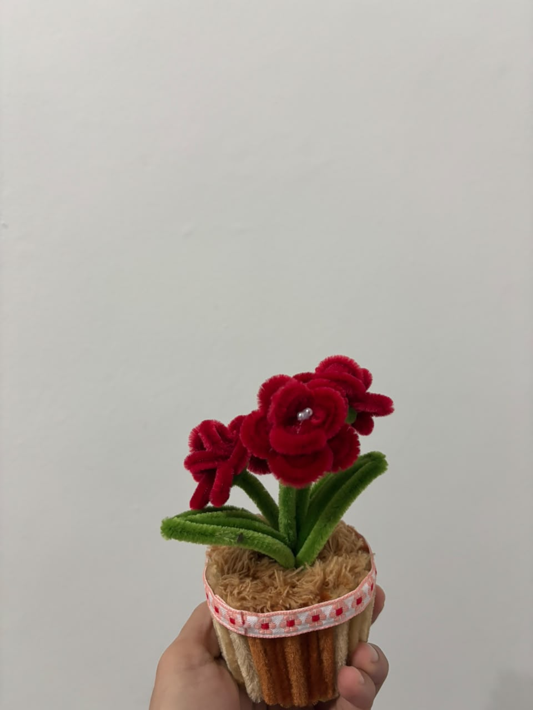